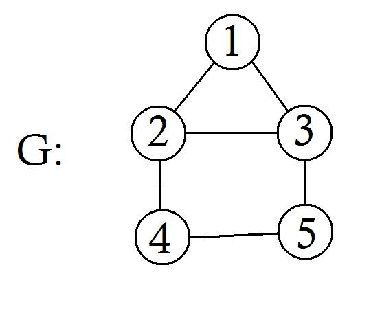
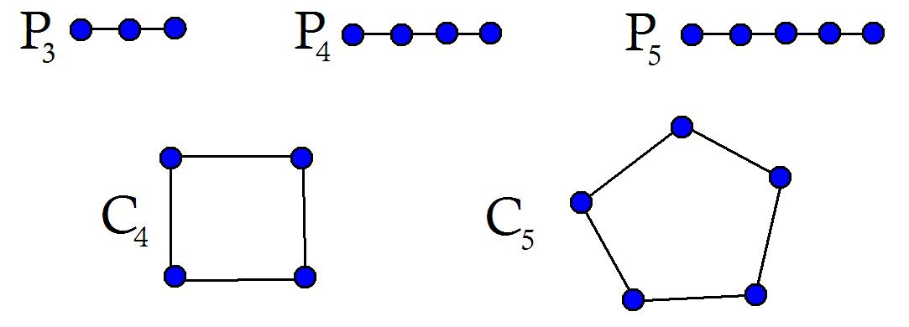
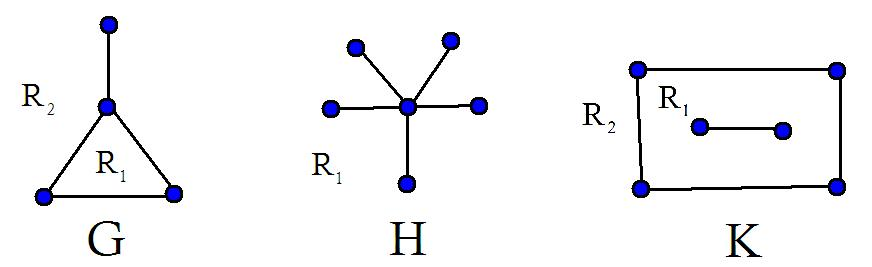

Section 1.4 Paths and connectivity
¶A \(u-v\) path in a graph \(G\) is a sequence \(v_0 v_1 \ldots v_n\) of (distinct) vertices with \(u = v_0\) and \(v = v_n\) and such \(G\) contains the edges \(v_0v_1, v_1v_2, \ldots, v_{n-1}v_n\text{.}\) The number \(n\) of edges is the length of the \(u-v\) path.
A cycle in a graph \(G\) is a sequence \(v_0 v_1 \ldots v_{n-1},v_0\) of distinct vertices such that \(v_0v_1,v_1v_2, v_2v_3, \ldots, v_{n-1}v_0\) are edges of \(G\text{.}\)
Example 1.4.1. Paths and cycles.
In the graph \(G\) in Figure 1.4.2 find a path of length four and a cycle of length five.A path of length four of graph \(G\) is given by 1, 2, 4, 5, 3.
A cycle of length five is 1, 2, 4, 5, 3, 1.

A graph itself is called a path if all its vertices and edges are those of a path in a graph. We similarly define a graph to be a cycle. \(P_n\) denotes the path of order \(n\) and \(C_n\) denotes the cycle of order \(n\text{.}\)

Two vertices \(u\) and \(v\) of graph \(G\) is connected if there exists a \(u-v\) path in \(G\text{.}\) A graph \(G\) is connected if every two of its vertices are connected, otherwise \(G\) is disconnected.
The relation “is connected to” is an equivalence relation (see Section 5.1 for definition) on the vertex set of every graph \(G\text{.}\) Each subgraph induced by the vertices in a resulting equivalence class is called a component of \(G\text{.}\) Hence, a component of \(G\) is a subgraph that is maximal with respect to the property of being connected.

The graphs \(G\) and \(H\) of example Figure 1.4.4 are connected graphs. \(K\) is a disconnected graph with two components, one is the path \(P_2\) and the other a 4-cycle.